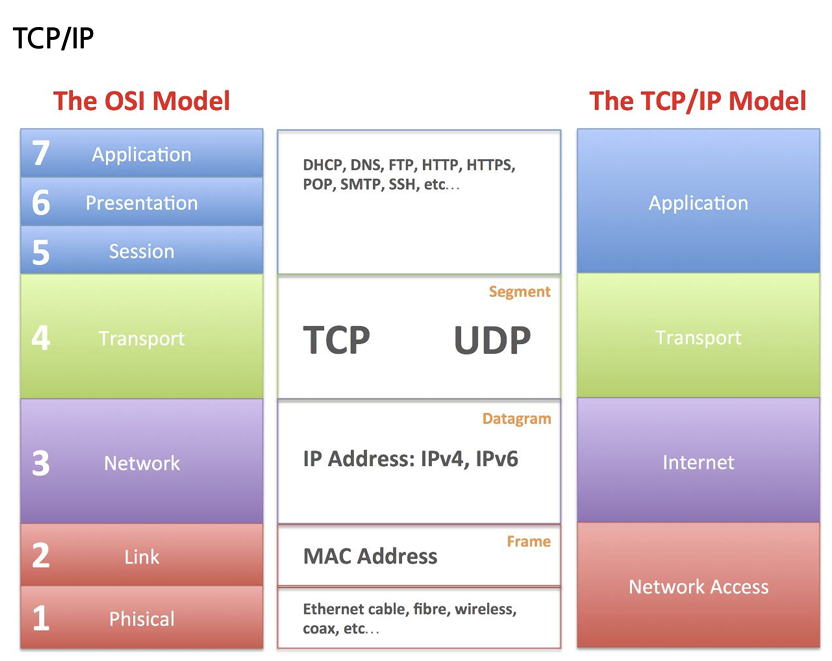
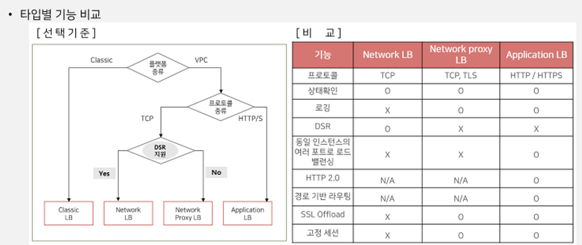
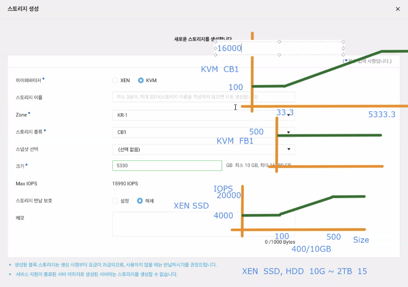
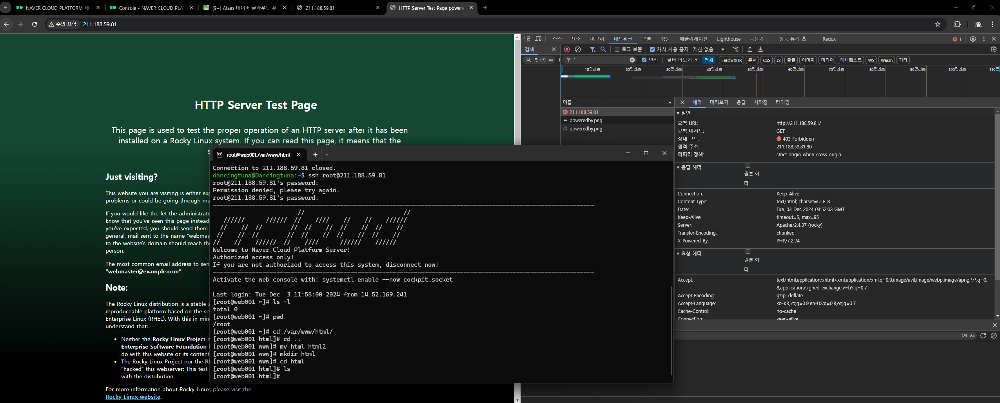
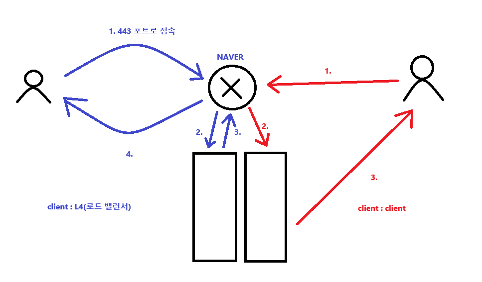
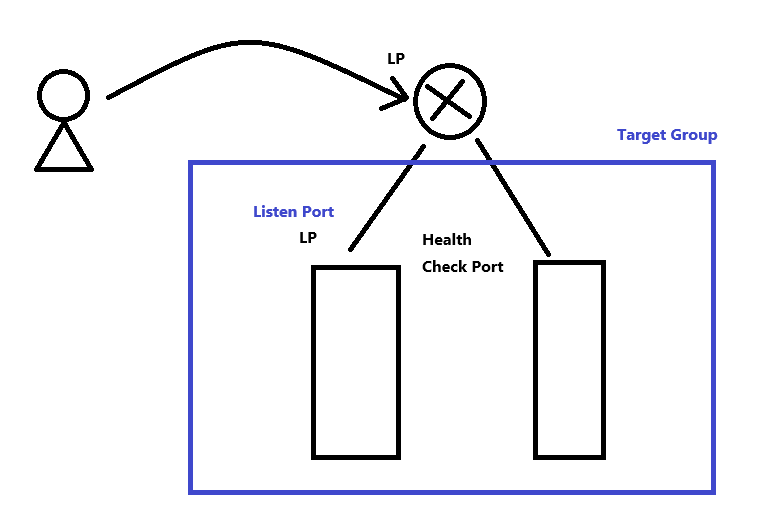
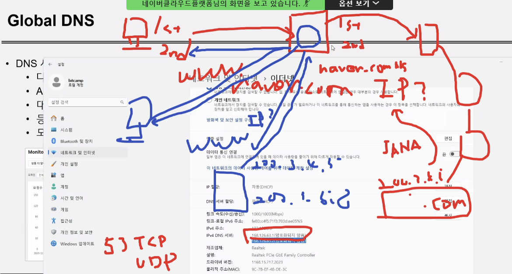
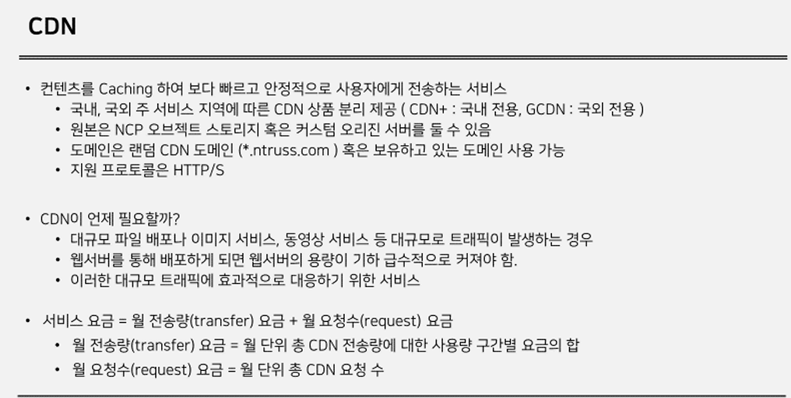
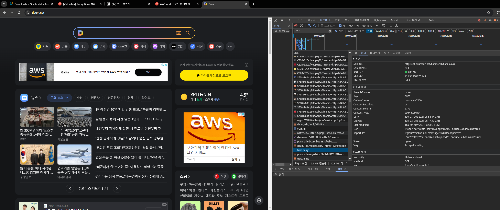
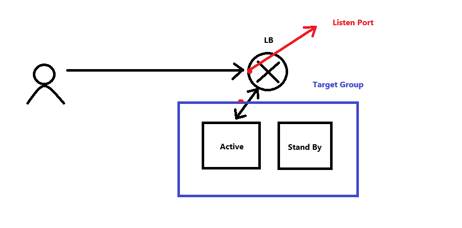

- 로드밸런서
- 부하처리 성능에 따라 Small / Medium / Large 중 선택 가능
- 로드밸런서마다 각각 초당 연결 수(CPS) 기준이 다르다
- Application : 각 30,000 / 60,000 / 90,000 개의 분산 처리를 보장
- Network : 각 100,000 / 200,000 / 400,000 개의 분산 처리를 보장
- Network Proxy : 각 30,000 / 60,000 / 90,000개의 분산 처리 보장
- 로드 밸런싱 알고리즘
- Round Robin : 클라이언트에서 요청이 오면 서버에 1개씩 분배하는 ㅂ방식
- Least Connection : 클라이언트 연결이 제일 적은 서버에게 새로운 커넥션을 분배하는 방식
- Source IP Hash : 클라이언트 IP에 대한 해시테이블을 가지고 클라이언트 IP에 매핑되는 서버에 새로운 커넥션을 분배하는 방식
- 나머지 LB 알고리즘은 ncp에는 존재하지 않음 → 나머지는 weight가 있는 방식이라 트래픽 비율을 조정할 수 있음 ⇒ 옛날 서버 장비의 경우 처리가 느리므로 최신 장비와 결합하면 비율 조정이 필요

Load balancer 종류






CDN
- cache이다.

- 예시

